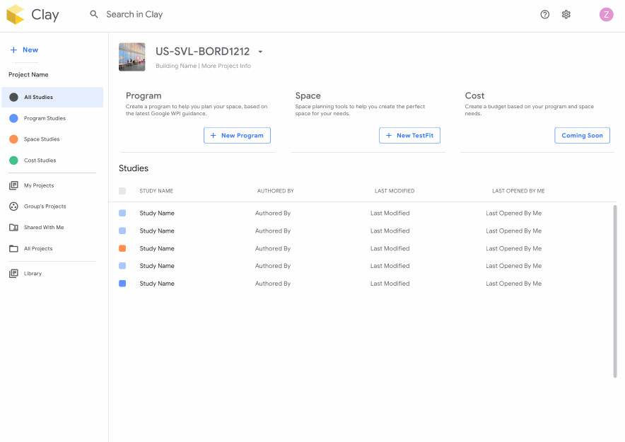
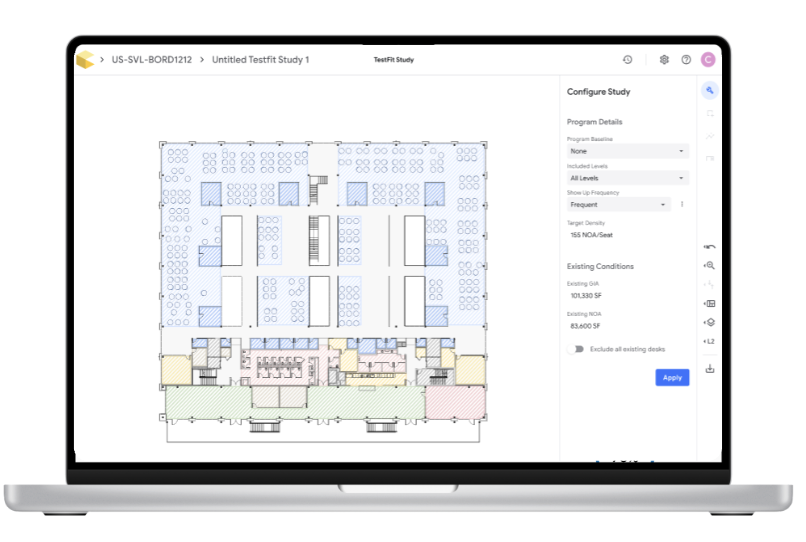
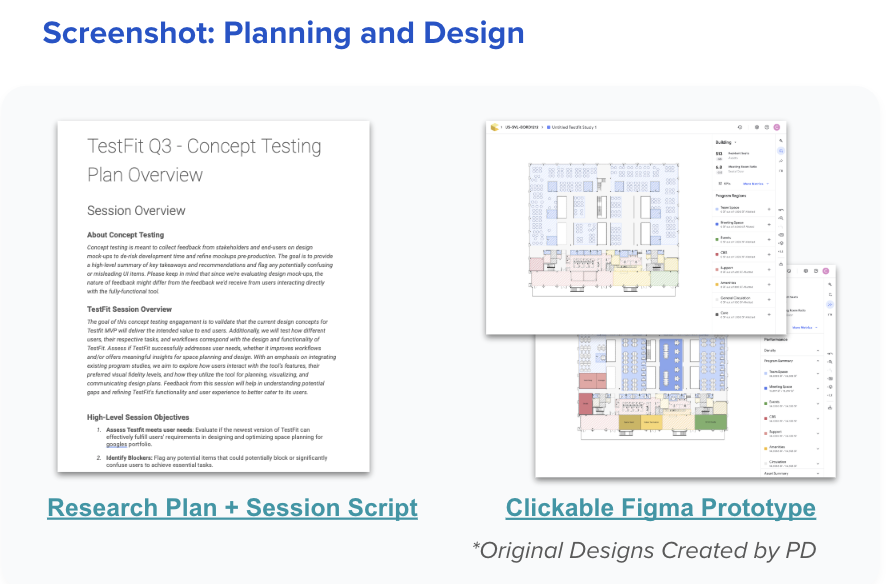

Google Planning Tool
Helping Google Real Estate Planners Plan, Forecast, and Deliver the Right Spaces

Context
The Challenge
Google Real Estate needed to merge two separate planning tools into one unified platform for space planning
Team Concern
Would the new merged design actually meet user needs before investing in full development?
My Role
Product Strategist on team with 1 Product Designer, 1 PM, 5 Engineers
Timeline
3 Weeks

The Problem
Before committing engineering resources, we needed to validate the design and identify potential barriers to adoption
Research Goals
Target Users
- Who is this most useful for, when, and for which tasks?
- Helps marketing, communications, and change management be precise, targeted, and clear
Goal Achievement
- Can users successfully accomplish their primary goals?
- Determines if minimum features as implemented today will meet their needs
Barriers to Adoption
- Are there barriers to adoption?
- Uncovers and highlights barriers in their most common workflows before launch
Research Approach
My Recommendation: Define critical user journeys and test those specific flows to focus the study
Research Methods
- Usability testing with clickable prototype
- Post-session survey for quantified results
Participants (6 Total)
- 2 Executive
- 2 Project Managers
- 2 Designers
Provided clear, quantified results that were easy for the team to digest and prioritize.

Critical User Journey
Goal: Visualize and edit space layouts to align with proposed program
Hypotheses
Small But Impactful Insight
The canvas view during project configuration caused confusion about how the program worked